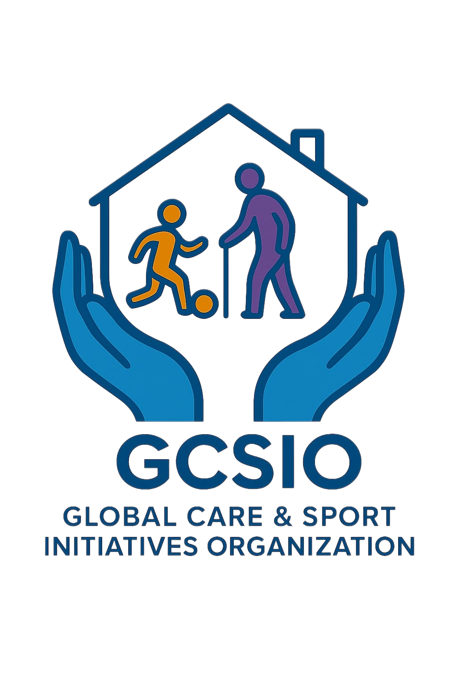
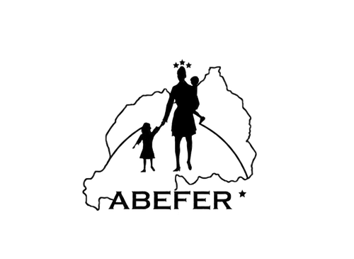

GCSIO
Website design and improvements for an organizational website — focused on clear information structure, modern visuals, and an experience that works across devices.

ABEFER
Website work for a nonprofit organization — improving readability, navigation, and the overall presentation of programs, updates, and community information.
ScanSpe
Landing experience and product-facing web work for a digital receipts platform — focused on clean UI, fast performance, and clear feature communication.
OneOttawa
Website work for a local/community organization — improving layout consistency, clarity of messaging, and overall usability for visitors and stakeholders.
Swisderm
Website design and development for a dermatology practice — focused on a professional presentation of services, clear patient information, and a polished brand experience across devices.